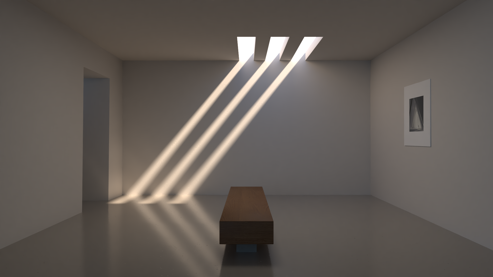
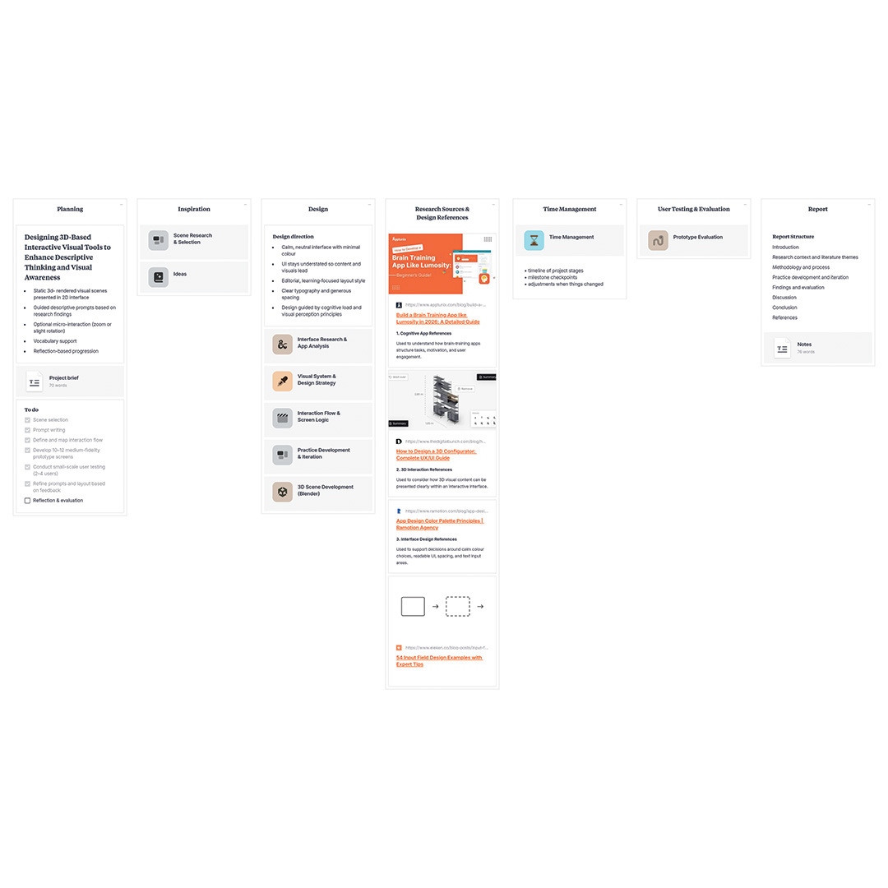
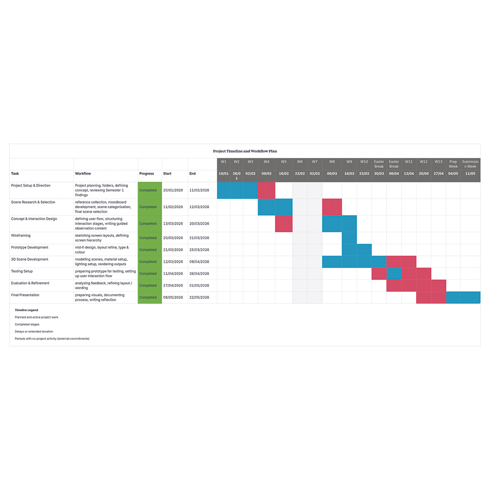
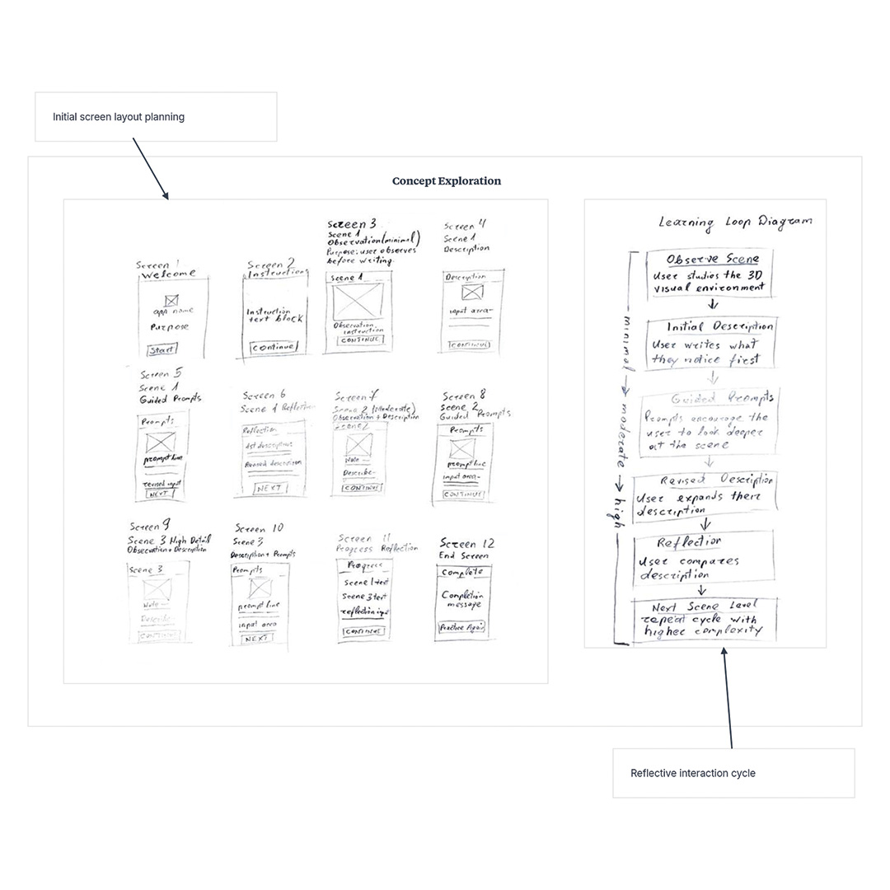
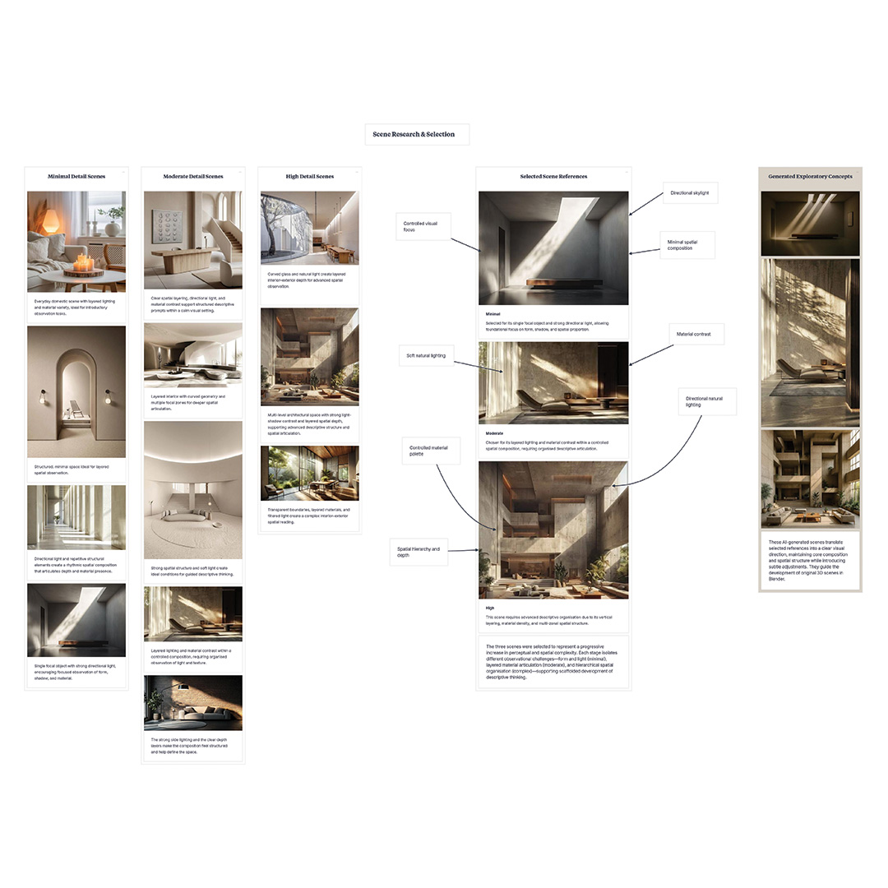
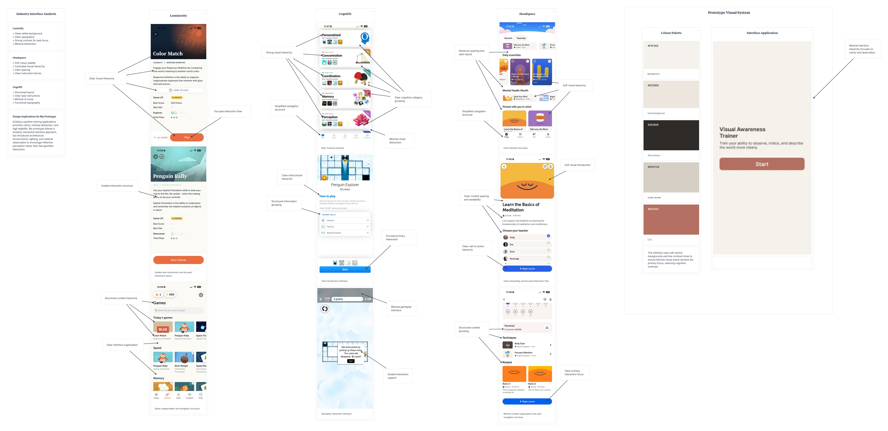
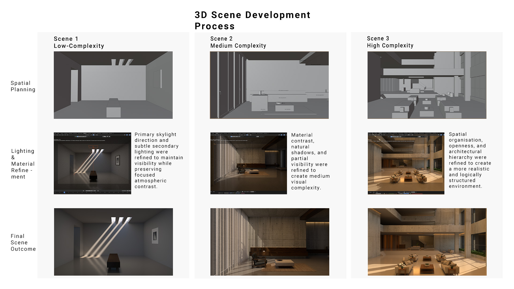

Aim
To develop an interactive 3D-based visual tool that improves users’ ability to observe and describe spatial environments through guided observation and reflection.

DM3107
An interactive 3D experience for improving visual awareness and descriptive thinking.
This project explores how interactive 3D visual design can support descriptive thinking and visual awareness through guided observation and reflective interaction. The work develops from the research conducted during Term 1, which investigated how adults perceive and describe visual scenes, and how interactive visual systems could encourage deeper observation and articulation.
The project emerged from a personal difficulty in verbally describing visual environments in a detailed and structured way. Although atmosphere, lighting, and spatial qualities could often be recognised internally, translating these observations into language remained challenging. This became more noticeable during university studies, where reflective communication and visual explanation are important parts of the design process. This experience became the starting point for exploring whether descriptive thinking and visual awareness could be strengthened through guided interaction and intentional observation.
As a Digital Design 3D Visualisation student, the project also became an opportunity to explore how 3D visualisation can function beyond architectural presentation imagery. Rather than using 3D environments only for representation or aesthetics, the project investigates how spatial composition, lighting, and materiality can become part of an interactive experience that encourages users to observe visual information more carefully and reflect on what they notice.
The practical outcome of the project is a medium-fidelity interactive prototype titled Visual Awareness Trainer. The prototype combines architectural visual scenes, guided observation stages, and reflective interaction within a calm visual interface designed to support focus and descriptive engagement.
The research conducted during Term 1 identified a gap within cognitive training applications such as Lumosity and CogniFit, which commonly focus on memory, reaction speed, and attention-based exercises, while descriptive thinking and visual articulation appeared to be less explored areas of interaction design.
Research into visual cognition and design thinking also suggested that observation and verbal articulation are closely connected. Arnheim (1969) explains that perception develops through active interpretation rather than passive viewing, while Lawson (2004) and Goldschmidt (2017) discuss how description supports reflective understanding and deeper cognitive processing. These ideas became central to the practical direction of the project, particularly in relation to how users engage with spatial environments and organise visual information through language.
The survey findings from Term 1 further reinforced these ideas. Participants frequently focused on immediately noticeable elements such as colour and lighting, while spatial relationships and atmosphere were described less consistently. Structured scenes with clear visual hierarchy were generally easier to describe than visually complex environments. These findings suggested that guided interaction and controlled visual complexity may help users engage more deeply with visual scenes and improve descriptive awareness.
The practical development stage therefore focused on how interactive 3D visual environments could encourage slower observation, structured attention, and reflective interaction rather than performance-based engagement.
.jpeg)

The project followed a reflective and iterative design process that combined research, visual experimentation, interaction planning, and practical development. The findings from Term 1 directly informed the practical design decisions developed during Term 2, particularly in relation to guided observation, interaction structure, and the use of controlled visual environments.
Milanote became the primary organisational tool throughout the project and was used to support research organisation, workflow planning, visual development, and prototype progression (Fig. 3.1). The platform helped structure the iterative design process and maintain a clear connection between the research findings and the practical stages of development.
Initially, the project proposal focused on developing a lower-fidelity prototype centred mainly around conceptual layouts and interaction planning. However, following tutor feedback encouraging a stronger practical outcome, the project direction evolved into a more developed medium-fidelity prototype supported by custom 3D visual scenes and interactive testing.
This shift became an important part of the reflective development process, allowing the research question to be explored more actively through visual design, interaction structure, and user engagement.
A detailed workflow plan was created at the beginning of the project to organise the main production stages across the term. The timeline included scene research, concept development, wireframing, prototype creation, 3D scene production, testing, and report preparation. A Gantt chart was used throughout the project to monitor task progression and adjust priorities when required.
Several stages progressed according to the original schedule, particularly wireframing and medium-fidelity prototype development. However, the scene selection and 3D production stages extended beyond the initial timeline. More time was required to finalise the visual direction of the scenes and resolve practical production tasks alongside other final-year submission work occurring during the same period.
This later affected the planned testing schedule, as the prototype testing depended on the completion of the visual scenes before evaluation could begin. In response, priorities were reorganised in order to focus on completing the strongest practical outcomes within the remaining timeframe. Although parts of the workflow developed later than originally planned, the project remained structured throughout production and the final outcome was completed successfully.


The practical phase of the project began by translating the findings from Term 1 into a visual and interactive experience. Early ideas focused on how 3D visualisation could support reflective observation and descriptive engagement through guided interaction and controlled visual environments.
Initial development explored how users could move through a guided process of observing, describing, reconsidering, and reflecting on visual environments. Hand-drawn wireframe sketches were used to explore interaction flow and pacing before moving into digital layouts.
One of the most important early decisions was avoiding performance-based interaction systems commonly found within cognitive training applications. Timers, scoring systems, and competitive mechanics were intentionally avoided in favour of slower and more reflective interaction. This decision aligned more closely with the project’s focus on awareness, observation, and descriptive thinking.
Scene development became an important part of the project due to its connection with both 3D visualisation practice and visual observation. The scenes were researched and organised according to visual complexity, lighting, spatial hierarchy, and material contrast.
References were grouped into three categories:
minimal detail
moderate detail
high detail
This process was informed by findings from the Term 1 survey and by Cognitive Load Theory, where more structured environments appeared to support clearer observation and descriptive organisation.
The scenes gradually progressed from minimal to more visually complex environments. This progression became an important part of the interaction strategy, encouraging deeper observation and more reflective engagement with the visual environments.


The interface direction focused on creating a visually restrained and structured environment that would support concentration and observation throughout the prototype. Existing applications including Lumosity, CogniFit, and Headspace were analysed during the planning stage to investigate interface clarity, navigation structure, visual hierarchy, and interaction simplicity (see Fig. 4.3).
Across all analysed applications, several consistent interface approaches became noticeable, including minimal visual noise, structured layouts, restrained colour systems, clear typography, and guided interaction flow. These observations informed the visual direction of the prototype and helped establish a calmer interface environment that would not visually compete with the observational scenes.
Particular attention was given to interface hierarchy, content organisation, and controlled interaction flow. CogniFit and Lumosity demonstrated how simplified layouts and structured navigation could maintain user focus during cognitive tasks, while Headspace showed how restrained colour palettes and minimal interface styling could support a calmer and more reflective experience.
These findings directly informed the final prototype visual system shown in the final column of Fig. 4.3. Neutral colours, restrained contrast, clear typography, and minimal interface styling were applied to create a calm and visually focused interface environment.
The interaction structure of the prototype was developed to support a gradual observational process through guided visual reflection and descriptive interaction. The user flow diagram in Fig. 4.4 illustrates the overall interaction sequence, beginning with introduction and instruction screens before progressing through increasingly complex visual scenes, reflective prompts, and completion stages.
Early interface planning was explored through low-fidelity wireframes in Fig. 4.4, which focused primarily on screen structure, content placement, interaction sequence, and layout organisation. These wireframes helped establish how observational tasks, prompts, and reflection stages would be presented progressively throughout the experience.
The interaction structure was later refined through the development of mid-fidelity screens (Fig. 4.4, bottom right). This stage introduced colour, typography, scene integration, spacing refinement, and clearer interface hierarchy while maintaining the restrained visual style established during the interface research stage. The prototype screens helped evaluate how users would progress through observation, description, guided reflection, and repeated scene analysis within a structured visual flow.

The 3D scenes were developed to investigate how spatial composition, lighting direction, and environmental complexity could influence observation and visual attention within the prototype. As shown in Fig. 4.5, the environments progressed from low-complexity to high-complexity scenes, allowing different levels of visual information and spatial depth to be explored throughout the project.
The low-complexity environment (Scene 1) focused on controlled lighting, minimal spatial distraction, and clear visual hierarchy. Directional skylight beams and negative space were used to guide attention toward specific areas within the scene, supporting concentrated observation and reducing unnecessary visual noise.
The medium-complexity environment (Scene 2) introduced greater material variation, atmospheric depth, and partial spatial visibility. Concrete remained the dominant material throughout the environment, combined with wood and fabric elements to soften the atmosphere while maintaining the brutalist direction. Rather than fully revealing the entire room, parts of the space remained partially obscured through shadow and framing, encouraging more active observation and interpretation.
The high-complexity environment (Scene 3) expanded the investigation into larger architectural space and spatial organisation. Initial references provided strong atmospheric direction; however, during development greater focus was placed on creating a more logically structured environment with clearer circulation, openness, and spatial hierarchy. This resulted in a more realistic architectural composition that supported both environmental scale and observational depth.
Across all scenes, lighting direction became one of the main visual tools used to control focus, depth, and visibility. Natural light, shadow contrast, and restrained material palettes were refined to support the project’s wider investigation into visual awareness and descriptive interpretation through 3D environments.
A small-scale online prototype test was conducted using a hosted medium-fidelity prototype and Google Form evaluation process. Four participants completed the experience and provided feedback relating to observation, visual engagement, interface clarity, and descriptive interaction.
The responses suggested that the guided observation stages encouraged users to examine the scenes more carefully and notice additional visual details. All participants reported that the experience encouraged more careful observation, while most participants also stated that the guidance helped them notice additional details within the scenes.
Participants generally described the prototype as clear and easy to follow. Feedback also suggested that the progression of scene complexity strengthened engagement throughout the experience. One participant specifically highlighted the impact of natural lighting, while another noted that reconsidering the scale of the environment changed their interpretation of the scene.
Although the testing group was limited in scale and consisted primarily of familiar participants, the consistency across responses suggested that guided observation and structured visual environments supported reflective engagement and descriptive awareness.
The project explored how 3D-based interactive visual design may support descriptive thinking and visual awareness through guided observation and reflective interaction. Throughout development, the relationship between spatial composition, lighting, material atmosphere, and interaction flow became central to the practical direction of the project.
One of the most important reflections from the project was understanding how simplicity and controlled visual hierarchy influence observation. Reducing interface distraction and focusing attention on atmosphere, lighting, and spatial composition appeared to strengthen reflective engagement with the scenes. The project also demonstrated how 3D visualisation can function beyond architectural representation by becoming part of a cognitive and observational experience.
The project remained exploratory in scale and several areas could be developed further in future iterations. A larger and more varied testing group would provide broader feedback, while additional interaction features and scene variation could strengthen the depth of the experience.
Beyond the prototype itself, the project also reflects ideas related to informal and self-directed learning. By encouraging users to observe, reflect, and describe visual environments more carefully, the experience explores how interactive 3D visual design may support cognitive engagement and visual awareness outside traditional educational settings. Although exploratory in scale, the project loosely connects to Sustainable Development Goal 4 through its focus on reflective learning and personal skill development through digital interaction.
This project explored how guided observation, reflective interaction, and 3D visual environments could support visual awareness and descriptive thinking through a structured digital experience. The development process demonstrated that atmosphere, lighting direction, spatial composition, and controlled interface hierarchy could influence how users observe and interpret visual environments. Rather than functioning only as architectural visualisation, the 3D scenes became part of a reflective observational process designed to encourage slower and more attentive viewing.
Throughout the project, the relationship between interaction structure and environmental atmosphere became increasingly important. Guided prompts encouraged participants to reconsider lighting, materials, scale, and spatial depth within the scenes, while the restrained interface approach helped maintain focus on observation rather than interface distraction. The progression between scenes also appeared to strengthen engagement by gradually increasing visual complexity and encouraging deeper interpretation.
The testing phase, although limited in scale, suggested that the prototype successfully supported reflective engagement and encouraged participants to notice additional details within the environments. Feedback relating to lighting, atmosphere, and spatial interpretation reinforced the importance of environmental composition within the experience. The project also highlighted how interactive 3D design may support informal and self-directed learning outside traditional educational settings through observation and reflective interaction.
Several limitations affected the project throughout development. The testing group remained small and primarily consisted of familiar participants, limiting the broader reliability of the feedback. Time management also became challenging during later development stages due to overlap with another major practical submission, requiring adjustments to the original production schedule. Despite these limitations, the project was completed successfully through continuous workflow adaptation, prioritisation, and refinement throughout development.
Overall, the project demonstrated the potential for 3D visualisation, interaction design, and guided observation to function together as part of a reflective cognitive experience. Future development could expand the interaction system further through larger-scale testing, additional scene variation, adaptive guidance systems, and deeper integration between visual analysis and descriptive learning.
Generative AI tools were used selectively for early visual exploration, reference searching, prototype support, and improving grammar, structure, vocabulary, and terminology. All research direction, scene development, interaction planning, reflective analysis, and final design decisions were independently created and evaluated as part of my own process. AI was used between 19 January 2026 and 22 May 2026.